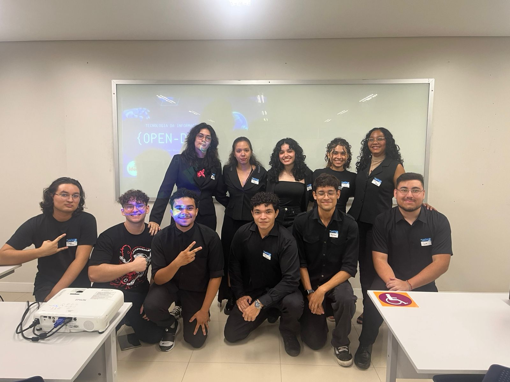

Open Day Colégio Ideal
Em 23 de abril de 2026, participei do primeiro Open Day anual da Faci Wyden em conjunto com o Colégio Ideal.
Atuei apresentando e explicando o curso de Sistemas de Informação aos alunos visitantes, abordando os diferenciais da área de Tecnologia da Informação, os objetivos da graduação e as oportunidades no mercado de trabalho.
A experiência contribuiu para o desenvolvimento da minha comunicação, oratória e capacidade de apresentar conhecimentos técnicos.